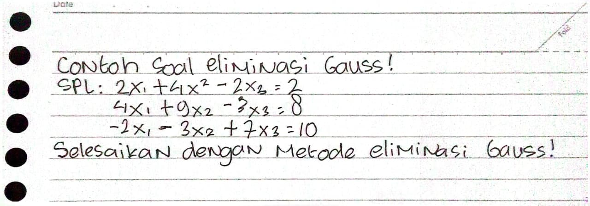
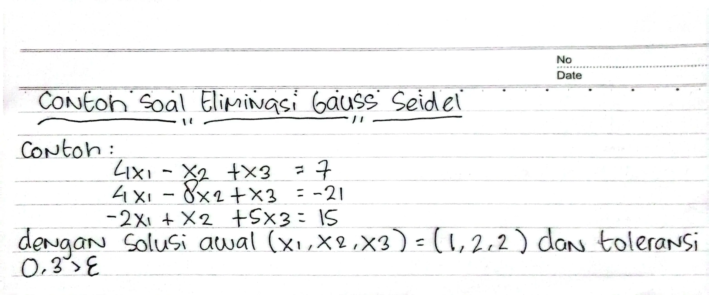

Metode Numerik
Geser ke samping untuk melihat seluruh matriks
Riwayat perhitungan belum tersedia
Contoh soal SPL tiga variabel Metode Eliminasi Gauss

Masukkan jumlah variabel, klik Buat Matriks, lalu isi nilai matriks sesuai soal.
Kolom 1| Kolom 2 | Kolom 3 | Konstanta Baris 1 : 2 | 4 | -2 | 2 Baris 2 : 4 | 9 | -3 | 8 Baris 3 : -2 | -3 | 7 | 10
Contoh soal SPL tiga variabel menggunakan metode Gauss-Seidel

Tentukan jumlah variabel, klik Buat Matriks, lalu isi nilai matriks. Solusi awal, toleransi (ε), dan iterasi bersifat opsional.
Kolom 1 | Kolom 2 | Kolom 3 | Konstanta Baris 1 : 4 | -1 | 1 | 7 Baris 2 : 4 | -8 | 1 | -21 Baris 3 : -2 | 1 | 5 | 15 ------------------------------------------------ Solusi Awal : 1 | 2 | 2 | Toleransi : 0.03 Iterasi : 50 (Kosongkan jika menggunakan nilai default)